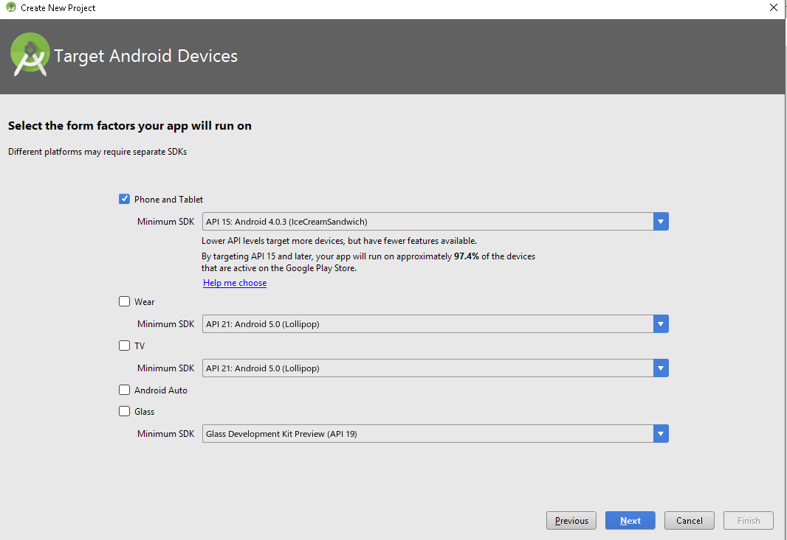

Paint with Android
Interface creation
1. Create an Android Project
Step 1
Start a new Android project in Android Studio, choosing application and package names. We are using a minimum API level of 15 for the code in this tutorial.

Let Android Studio create a blank main Activity and layout - you can use the default names.
Step 2
Open your project Manifest file and switch to the XML editing tab. Your Activity and SDK levels should already be set. Add the following to your Activity element opening tag, forcing the app only to use portrait:
android:screenOrientation="portrait"
Step 3
Before we start building the interface, let's define some numbers we will use throughout the series. In your app's "res/values" folder, if Eclipse has not already created it, add the "dimens.xml" file - if it is already there you can simply add new values to it. The outline should be as follows:
<resources> </resources>
If Eclipse created the file, there may be some values in it already. We are going to use three possible brush/eraser sizes: small, medium, and large. We need to define the size for each as both a dimension and an integer value so that we can use these measurements in both the XML layout and drawable resources and the Java code:
<!-- Brush sizes --> <dimen name="small_brush">10dp</dimen> <integer name="small_size">10</integer> <dimen name="medium_brush">20dp</dimen> <integer name="medium_size">20</integer> <dimen name="large_brush">30dp</dimen> <integer name="large_size">30</integer>
The values for dimension and integer at each size are the same, so that the UI indicates the brush size as it will function when the user draws with it.
2. Create a Custom View Class
Step 1
We are going to define a custom View class in which the drawing will take place. In your app's source package, create a new class. Name it "DrawingView" and select "android.view.View" as the Superclass. The new class should have the following outline:
public class DrawingView extends View
{
}
Step 2
In your new View class you will need the following import statements in addition to the View import which Eclipse should have added for you:
import android.content.Context; import android.util.AttributeSet;
Add a constructor method to the class:
public DrawingView(Context context, AttributeSet attrs){
super(context, attrs);
setupDrawing();
}
We will add an instance of the custom View to the XML layout file. Add the specified helper method to the class:
private void setupDrawing(){
//get drawing area setup for interaction
}
We will implement this method in the next part of the series, as well as adding other methods to the class.
3. Design the Activity Layout
Step 1
Open your app's "res/values" strings XML file and add some text strings we will use in the layout:
<string name="start_new">New</string> <string name="brush">Brush</string> <string name="erase">Erase</string> <string name="save">Save</string> <string name="paint">Paint</string>
Open the app's main layout file and switch to the XML tab to edit the code. The Activity screen content will be easiest to implement using Linear Layouts. Replace the content of the layout file with the following outline:
<LinearLayout xmlns:android="http://schemas.android.com/apk/res/android" xmlns:tools="http://schemas.android.com/tools" android:layout_width="match_parent" android:layout_height="match_parent" android:background="#FFCCCCCC" android:orientation="vertical" tools:context=".MainActivity" > </LinearLayout>
We set vertical orientation and a gray background color.
Step 2
Inside the main Linear Layout, add another to hold the UI buttons along the top of the screen:
<LinearLayout
android:layout_width="wrap_content"
android:layout_height="50dp"
android:layout_gravity="center"
android:orientation="horizontal" >
</LinearLayout>
This time the layout is horizontal with a set height and centering applied. Inside this layout we will add the buttons for starting a new drawing, selecting a brush, selecting an eraser, and saving a drawing. We are using the following images for these buttons, although you can create your own if you prefer:


Copy the images to your app's drawable folder(s) - if you are creating your own you can target particular densities. To complete the tutorial series without targeting particular screen densities you can simply create a folder named "drawable" and add all of your drawable resources to it.
Let's now add an ImageButton for each option in the Activity. Start with the button to create a new drawing inside the second Linear Layout:
<ImageButton
android:id="@+id/new_btn"
android:layout_width="wrap_content"
android:layout_height="fill_parent"
android:contentDescription="@string/start_new"
android:src="@drawable/new_pic" />
We will use the ID to respond to button clicks in the Activity class. We specify the new button icon image as source for the ImageButton and add a content description string.
Next add the brush button:
<ImageButton android:id="@+id/draw_btn" android:layout_width="wrap_content" android:layout_height="fill_parent" android:contentDescription="@string/brush" android:src="@drawable/brush" />
Now add the eraser button:
<ImageButton android:id="@+id/erase_btn" android:layout_width="wrap_content" android:layout_height="fill_parent" android:contentDescription="@string/erase" android:src="@drawable/eraser" />
On clicking either the brush or eraser button, the user will be prompted to select a size - we will implement this later. Next add the save button:
<ImageButton android:id="@+id/save_btn" android:layout_width="wrap_content" android:layout_height="fill_parent" android:contentDescription="@string/save" android:src="@drawable/save" />
That's it for the top Linear Layout control buttons.
Step 3
After the top button Linear Layout, but still inside the outer Linear Layout in the file, let's now add an instance of the custom view class we created:
<com.example.drawingfun.DrawingView android:id="@+id/drawing" android:layout_width="fill_parent" android:layout_height="0dp" android:layout_marginBottom="3dp" android:layout_marginLeft="5dp" android:layout_marginRight="5dp" android:layout_marginTop="3dp" android:layout_weight="1" android:background="#FFFFFFFF" />
As you can see, you can add a custom View to your layouts in much the same way as the standard Android UI elements. We set general layout properties, a white background for drawing, and provide an ID for referencing the View in Java. By retrieving a reference to this instance of the custom View class, our Activity will be able to access the methods we define in the View class declaration we created.
Step 4
Now let's add the color palette. After the custom View element, add another Linear Layout for the palette buttons:
<LinearLayout android:layout_width="wrap_content" android:layout_height="wrap_content" android:layout_gravity="center" android:orientation="vertical" > </LinearLayout>
This element will contain two rows of buttons so enter two more Linear Layouts for these. Place the following inside the one you just added:
<!-- Top Row --> <LinearLayout android:id="@+id/paint_colors" android:layout_width="wrap_content" android:layout_height="wrap_content" android:orientation="horizontal" > </LinearLayout> <!-- Bottom Row --> <LinearLayout android:layout_width="wrap_content" android:layout_height="wrap_content" android:orientation="horizontal" > </LinearLayout>
The first row has an ID because we are going to use it in Java when the app starts to set the first default color as selected so that the user can start drawing straight away. For each color, we are going to use the following ImageButton structure:
<ImageButton android:layout_width="@dimen/large_brush" android:layout_height="@dimen/large_brush" android:layout_margin="2dp" android:background="#FF660000" android:contentDescription="@string/paint" android:onClick="paintClicked" android:src="@drawable/paint" android:tag="#FF660000" />
Don't add this to your layout file yet - we will do that shortly, for now look over the code. We use one of the dimension values we defined for the color button. Notice that the background and tag attributes are the same - the background is for the appearance of the button in the UI, while the tag is so that we can set the paint color according to what the user has clicked in the Activity Java code. The element includes a method to execute on clicks of the button - we will implement this in the Activity class next time. We also specify a drawable named "paint". Add this to the project now, creating a new file in the project drawable folder(s) and naming it "paint.xml". Enter the following code in the new drawable file:
<layer-list xmlns:android="http://schemas.android.com/apk/res/android" > <item> <shape android:shape="rectangle" > <stroke android:width="4dp" android:color="#FF999999" /> <solid android:color="#00000000" /> <padding android:bottom="0dp" android:left="0dp" android:right="0dp" android:top="0dp" /> </shape> </item> <item> <shape xmlns:android="http://schemas.android.com/apk/res/android" > <stroke android:width="4dp" android:color="#FF999999" /> <solid android:color="#00000000" /> <corners android:radius="10dp" /> </shape> </item> </layer-list>
This is less complex than it looks at first glance. To create a rounded button appearance, we use two layered Shape Drawables, one a rectangle outline and the other a rounded stroke. The strokes have a gray color, with transparency in the middle through which the background color for each button will be seen (the background color being the color represented by the button).
Back in the layout file, inside the top row layout in the color palette section, add the following ImageButton elements to represent the first six colors, using the structure we outlined above:
<ImageButton android:layout_width="@dimen/large_brush" android:layout_height="@dimen/large_brush" android:layout_margin="2dp" android:background="#FF660000" android:contentDescription="@string/paint" android:onClick="paintClicked" android:src="@drawable/paint" android:tag="#FF660000" /> <ImageButton android:layout_width="@dimen/large_brush" android:layout_height="@dimen/large_brush" android:layout_margin="2dp" android:background="#FFFF0000" android:contentDescription="@string/paint" android:onClick="paintClicked" android:src="@drawable/paint" android:tag="#FFFF0000" /> <ImageButton android:layout_width="@dimen/large_brush" android:layout_height="@dimen/large_brush" android:layout_margin="2dp" android:background="#FFFF6600" android:contentDescription="@string/paint" android:onClick="paintClicked" android:src="@drawable/paint" android:tag="#FFFF6600" /> <ImageButton android:layout_width="@dimen/large_brush" android:layout_height="@dimen/large_brush" android:layout_margin="2dp" android:background="#FFFFCC00" android:contentDescription="@string/paint" android:onClick="paintClicked" android:src="@drawable/paint" android:tag="#FFFFCC00" /> <ImageButton android:layout_width="@dimen/large_brush" android:layout_height="@dimen/large_brush" android:layout_margin="2dp" android:background="#FF009900" android:contentDescription="@string/paint" android:onClick="paintClicked" android:src="@drawable/paint" android:tag="#FF009900" /> <ImageButton android:layout_width="@dimen/large_brush" android:layout_height="@dimen/large_brush" android:layout_margin="2dp" android:background="#FF009999" android:contentDescription="@string/paint" android:onClick="paintClicked" android:src="@drawable/paint" android:tag="#FF009999" />
Each button is identical apart from the colors defined in the background and tag attributes. Add the next six in the bottom row layout:
<ImageButton android:layout_width="@dimen/large_brush" android:layout_height="@dimen/large_brush" android:layout_margin="2dp" android:background="#FF0000FF" android:contentDescription="@string/paint" android:onClick="paintClicked" android:src="@drawable/paint" android:tag="#FF0000FF" /> <ImageButton android:layout_width="@dimen/large_brush" android:layout_height="@dimen/large_brush" android:layout_margin="2dp" android:background="#FF990099" android:contentDescription="@string/paint" android:onClick="paintClicked" android:src="@drawable/paint" android:tag="#FF990099" /> <ImageButton android:layout_width="@dimen/large_brush" android:layout_height="@dimen/large_brush" android:layout_margin="2dp" android:background="#FFFF6666" android:contentDescription="@string/paint" android:onClick="paintClicked" android:src="@drawable/paint" android:tag="#FFFF6666" /> <ImageButton android:layout_width="@dimen/large_brush" android:layout_height="@dimen/large_brush" android:layout_margin="2dp" android:background="#FFFFFFFF" android:contentDescription="@string/paint" android:onClick="paintClicked" android:src="@drawable/paint" android:tag="#FFFFFFFF" /> <ImageButton android:layout_width="@dimen/large_brush" android:layout_height="@dimen/large_brush" android:layout_margin="2dp" android:background="#FF787878" android:contentDescription="@string/paint" android:onClick="paintClicked" android:src="@drawable/paint" android:tag="#FF787878" /> <ImageButton android:layout_width="@dimen/large_brush" android:layout_height="@dimen/large_brush" android:layout_margin="2dp" android:background="#FF000000" android:contentDescription="@string/paint" android:onClick="paintClicked" android:src="@drawable/paint" android:tag="#FF000000" />
Change the colors if you like, but make sure you use the same color value in the background and tag attributes for each button. You should now be able to see the layout in the Graphical Layout tab in Eclipse:
Touch interaction
1. Prepare for Drawing
Step 1
Last time we created a class named "DrawingView" which is a custom View for the drawing functions to take place in. We created the outline of the class declaration and a method named "setupDrawing" - we will implement this now. In your DrawingView class, add the following import statements:
import android.graphics.Bitmap; import android.graphics.Canvas; import android.graphics.Paint; import android.graphics.Path; import android.view.MotionEvent;
Next add some instance variables at the top of the class:
//drawing path private Path drawPath; //drawing and canvas paint private Paint drawPaint, canvasPaint; //initial color private int paintColor = 0xFF660000; //canvas private Canvas drawCanvas; //canvas bitmap private Bitmap canvasBitmap;
When the user touches the screen and moves their finger to draw, we will use a Path to trace their drawing action on the canvas. Both the canvas and the drawing on top of it are represented by Paint objects. The initial paint color corresponds to the first color in the palette we created last time, which will be initially selected when the app launches. Finally we declare variables for the canvas and bitmap - the user paths drawn with drawPaint will be drawn onto the canvas, which is drawn with canvasPaint.
Step 2
In the setupDrawing method, let's instantiate some of these variables now to set the class up for drawing. First instantiate the drawing Path and Paint objects:
drawPath = new Path(); drawPaint = new Paint();
Next set the initial color:
drawPaint.setColor(paintColor);
Now set the initial path properties:
drawPaint.setAntiAlias(true); drawPaint.setStrokeWidth(20); drawPaint.setStyle(Paint.Style.STROKE); drawPaint.setStrokeJoin(Paint.Join.ROUND); drawPaint.setStrokeCap(Paint.Cap.ROUND);
We will alter part of this code in the next tutorial when we implement the ability to choose brush sizes, for now we set an arbitrary brush size. Setting the anti-alias, stroke join and cap styles will make the user's drawings appear smoother.
Complete the setupDrawing method by instantiating the canvas Paint object:
canvasPaint = new Paint(Paint.DITHER_FLAG);
This time we set dithering by passing a parameter to the constructor.
Step 3
We need to override a couple of methods to make the custom View function as a drawing View. First, still inside the DrawingView class, override the onSizeChanged method, which will be called when the custom View is assigned a size:
@Override
protected void onSizeChanged(int w, int h, int oldw, int oldh) {
//view given size
}
Inside this method, first call the superclass method:
super.onSizeChanged(w, h, oldw, oldh);
Now instantiate the drawing canvas and bitmap using the width and height values:
canvasBitmap = Bitmap.createBitmap(w, h, Bitmap.Config.ARGB_8888); drawCanvas = new Canvas(canvasBitmap);
Step 4
To allow the class to function as a custom drawing View, we also need to override the onDraw method, so add it to the class now:
@Override
protected void onDraw(Canvas canvas) {
//draw view
}
Inside the method, draw the canvas and the drawing path:
canvas.drawBitmap(canvasBitmap, 0, 0, canvasPaint); canvas.drawPath(drawPath, drawPaint);
We have not yet implemented the ability for the user to draw the Path using the drawing Paint, but once we do this will present it in the View. Each time the user draws using touch interaction, we will invalidate the View, causing the onDraw method to execute.
2. Facilitate Drawing
Step 1
When the drawing View is on the app screen, we want user touches on it to register as drawing operations. To do this we need to listen for touch events. In your drawingView class, add the following method:
@Override
public boolean onTouchEvent(MotionEvent event) {
//detect user touch
}
Inside the method, retrieve the X and Y positions of the user touch:
float touchX = event.getX(); float touchY = event.getY();
Step 2
The MotionEvent parameter to the onTouchEvent method will let us respond to particular touch events. The actions we are interested in to implement drawing are down, move and up. Add a switch statement in the method to respond to each of these:
switch (event.getAction()) {
case MotionEvent.ACTION_DOWN:
drawPath.moveTo(touchX, touchY);
break;
case MotionEvent.ACTION_MOVE:
drawPath.lineTo(touchX, touchY);
break;
case MotionEvent.ACTION_UP:
drawCanvas.drawPath(drawPath, drawPaint);
drawPath.reset();
break;
default:
return false;
}
Take a moment to look over this code. When the user touches the View, we move to that position to start drawing. When they move their finger on the View, we draw the path along with their touch. When they lift their finger up off the View, we draw the Path and reset it for the next drawing operation.
Step 3
After the switch statement, complete the method by invalidating the View and returning a true value:
invalidate(); return true;
Calling invalidate will cause the onDraw method to execute.
3. Choosing Colors
Step 1
Let's now implement the ability for the user to choose colors from the palette. In the app's main Activity, add the following imports:
import android.view.View; import android.widget.ImageButton; import android.widget.LinearLayout;
Add the following instance variable to the class:
private DrawingView drawView;
This represents the instance of the custom View that we added to the layout. Inside onCreate, after the existing code, instantiate this variable by retrieving a reference to it from the layout:
drawView = (DrawingView)findViewById(R.id.drawing);
We now have the View that is displayed in the Activity on which we can call the methods in the DrawingView class.
Step 2
We set the initial paint color in the drawing View class, let's now set the user interface up to reflect and manage that. In the main Activity class, add another instance variable to represent the paint color button in the palette:
private ImageButton currPaint;
Inside onCreate, we now want to retrieve the first paint color button in the palette area, which is initially going to be selected. First retrieve the Linear Layout it is contained within:
LinearLayout paintLayout = (LinearLayout)findViewById(R.id.paint_colors);
Get the first button and store it as the instance variable:
currPaint = (ImageButton)paintLayout.getChildAt(0);
We will use a different drawable image on the button to show that it is currently selected:
currPaint.setImageDrawable(getResources().getDrawable(R.drawable.paint_pressed));
Add this file to your app's drawables now, giving it the name "paint_pressed.xml" and entering the following shape:
<layer-list xmlns:android="http://schemas.android.com/apk/res/android" > <item> <shape android:shape="rectangle" > <stroke android:width="4dp" android:color="#FF333333" /> <solid android:color="#00000000" /> <padding android:bottom="0dp" android:left="0dp" android:right="0dp" android:top="0dp" /> </shape> </item> <item> <shape xmlns:android="http://schemas.android.com/apk/res/android" > <stroke android:width="4dp" android:color="#FF333333" /> <solid android:color="#00000000" /> <corners android:radius="10dp" /> </shape> </item> </layer-list>
This is very similar to the "paint.xml" drawable we created last time, but with a darker color around the paint.
Step 3
Now we can let the user choose colors. When we created the layout last time, we listed an onClick attribute for the color palette buttons - add the method to your main Activity class now:
public void paintClicked(View view){
//use chosen color
}
Inside this method, first check that the user has clicked a paint color that is not the currently selected one:
if(view!=currPaint){
//update color
}
Inside the if block, retrieve the tag we set for each button in the layout, representing the chosen color:
ImageButton imgView = (ImageButton)view; String color = view.getTag().toString();
We need to use the custom View class to set the color. Move to the DrawingView class now and add the following method:
public void setColor(String newColor){
//set color
}
Inside the method, start by invalidating the View:
invalidate();
Next parse and set the color for drawing:
paintColor = Color.parseColor(newColor); drawPaint.setColor(paintColor);
Back in your main Activity, in the paintClicked method after retrieving the color tag, call the new method on the custom drawing View object:
drawView.setColor(color);
Now update the UI to reflect the new chosen paint and set the previous one back to normal:
imgView.setImageDrawable(getResources().getDrawable(R.drawable.paint_pressed)); currPaint.setImageDrawable(getResources().getDrawable(R.drawable.paint)); currPaint=(ImageButton)view;
Essencial functionality
1. Choosing Brush Sizes
Step 1
Last time we implemented drawing on the canvas, now we can let the user choose a brush size. The brush size options will appear when the user presses the brush button we added to the interface. To respond to this, extend the opening line of your main Activity class declaration to implement the OnClickListener interface:
public class MainActivity extends Activity implements OnClickListener
You will need the following import statements added to the class for this tutorial:
import java.util.UUID; import android.provider.MediaStore; import android.app.AlertDialog; import android.app.Dialog; import android.content.DialogInterface; import android.view.View.OnClickListener; import android.widget.Toast;
Add the following instance variables to the class to store the three dimension values we defined last time:
private float smallBrush, mediumBrush, largeBrush;
Instantiate them in onCreate:
smallBrush = getResources().getInteger(R.integer.small_size); mediumBrush = getResources().getInteger(R.integer.medium_size); largeBrush = getResources().getInteger(R.integer.large_size);
We will use these later. You should already have an ImageButton instance variable in the main class named "currPaint" - extend that line to add another now for the drawing button:
private ImageButton currPaint, drawBtn;
In onCreate retrieve a reference to the button from the layout:
drawBtn = (ImageButton)findViewById(R.id.draw_btn);
Set the class up as a click listener for the button:
drawBtn.setOnClickListener(this);
Step 2
Add an onClick method to the class:
@Override
public void onClick(View view){
//respond to clicks
}
Inside the method, check for clicks on the drawing button:
if(view.getId()==R.id.draw_btn){
//draw button clicked
}
We will be adding conditional blocks to the onClick method for the other buttons later.
Step 3
When the user clicks the button, we will display a dialog presenting them with the three button sizes. Inside the if block, create a Dialog and set the title:
final Dialog brushDialog = new Dialog(this);
brushDialog.setTitle("Brush size:");
Let's define the Dialog layout in XML - add a new file in your app's "res/layout" folder, naming it "brush_chooser.xml" and entering the following outline:
<LinearLayout xmlns:android="http://schemas.android.com/apk/res/android" android:layout_width="match_parent" android:layout_height="match_parent" android:gravity="center" android:orientation="vertical" > </LinearLayout>
Inside the Linear Layout, add a button for each size:
<ImageButton android:id="@+id/small_brush" android:layout_width="wrap_content" android:layout_height="wrap_content" android:layout_weight="1" android:contentDescription="@string/sml" android:src="@drawable/small" /> <ImageButton android:id="@+id/medium_brush" android:layout_width="wrap_content" android:layout_height="wrap_content" android:layout_weight="1" android:contentDescription="@string/med" android:src="@drawable/medium" /> <ImageButton android:id="@+id/large_brush" android:layout_width="wrap_content" android:layout_height="wrap_content" android:layout_weight="1" android:contentDescription="@string/lrg" android:src="@drawable/large" />
Each button has an ID for identification in the Activity Java code. You will notice that each one also has a content description attribute - add the specified strings to your "res/values" strings XML file:
<string name="sml">Small</string> <string name="med">Medium</string> <string name="lrg">Large</string>
As you can see in the layout file, each button also has a drawable file listed as its source attribute. Create new files for each of these in your "res/drawables" folder(s) now, starting with "small.xml" and entering the following content:
<shape xmlns:android="http://schemas.android.com/apk/res/android" android:dither="true" android:shape="oval" > <size android:height="@dimen/small_brush" android:width="@dimen/small_brush" /> <solid android:color="#FF666666" /> </shape>
Notice that we use the dimension values we defined. Next add "medium.xml" to the drawables folder, entering the following shape:
<shape xmlns:android="http://schemas.android.com/apk/res/android" android:dither="true" android:shape="oval" > <size android:height="@dimen/medium_brush" android:width="@dimen/medium_brush" /> <solid android:color="#FF666666" /> </shape>
Finally add "large.xml" with the following content:
<shape xmlns:android="http://schemas.android.com/apk/res/android" android:dither="true" android:shape="oval" > <size android:height="@dimen/large_brush" android:width="@dimen/large_brush" /> <solid android:color="#FF666666" /> </shape>
Back in your main Activity class onClick method, after creating the Dialog and setting its title, you can now set the layout:
brushDialog.setContentView(R.layout.brush_chooser);
Step 4
Before we continue with the Dialog, let's alter the custom drawing View class to use different brush sizes. In your DrawingView class, add the following import statements for this tutorial:
import android.graphics.PorterDuff; import android.graphics.PorterDuffXfermode; import android.util.TypedValue;
Add two instance variables to the class:
private float brushSize, lastBrushSize;
We will use the first variable for the brush size and the second to keep track of the last brush size used when the user switches to the eraser, so that we can revert back to the correct size when they decide to switch back to drawing. In the setupDrawing method, before the code already in there, add the following to instantiate these variables:
brushSize = getResources().getInteger(R.integer.medium_size); lastBrushSize = brushSize;
We use the dimension value for the medium sized brush to begin with. You can now update the line in the method where you set the stroke width with a hard-coded value to use this variable value instead:
drawPaint.setStrokeWidth(brushSize);
Add the following method to the class to set the brush size:
public void setBrushSize(float newSize){
//update size
}
Inside the method, update the brush size with the passed value:
float pixelAmount = TypedValue.applyDimension(TypedValue.COMPLEX_UNIT_DIP, newSize, getResources().getDisplayMetrics()); brushSize=pixelAmount; drawPaint.setStrokeWidth(brushSize);
We will be passing the value from the dimensions file when we call this method, so we have to calculate its dimension value. We update the variable and the Paint object to use the new size. Now add methods to get and set the other size variable we created:
public void setLastBrushSize(float lastSize){
lastBrushSize=lastSize;
}
public float getLastBrushSize(){
return lastBrushSize;
}
We will call these methods from the main Activity class.
Step 5
Back in your main Activity class, let's complete the Dialog code in the onClick method. After setting the content view on the Dialog object, listen for clicks on the three size buttons, starting with the small one:
ImageButton smallBtn = (ImageButton)brushDialog.findViewById(R.id.small_brush);
smallBtn.setOnClickListener(new OnClickListener(){
@Override
public void onClick(View v) {
drawView.setBrushSize(smallBrush);
drawView.setLastBrushSize(smallBrush);
brushDialog.dismiss();
}
});
We set the size using the methods we added to the custom View class as soon as the user clicks a brush size button, then immediately dismiss the Dialog. Next do the same for the medium and large buttons:
ImageButton mediumBtn = (ImageButton)brushDialog.findViewById(R.id.medium_brush);
mediumBtn.setOnClickListener(new OnClickListener(){
@Override
public void onClick(View v) {
drawView.setBrushSize(mediumBrush);
drawView.setLastBrushSize(mediumBrush);
brushDialog.dismiss();
}
});
ImageButton largeBtn = (ImageButton)brushDialog.findViewById(R.id.large_brush);
largeBtn.setOnClickListener(new OnClickListener(){
@Override
public void onClick(View v) {
drawView.setBrushSize(largeBrush);
drawView.setLastBrushSize(largeBrush);
brushDialog.dismiss();
}
});
Complete the draw button section of onClick by displaying the Dialog:
brushDialog.show();
The Dialog will display until the user makes a selection or goes back to the Activity.
Step 6
Use the new method to set the initial brush size in onCreate:
drawView.setBrushSize(mediumBrush);
2. Erasing
Step 1
Now let's add erasing to the app. In the custom drawing View class, add a boolean instance variable to act as a flag for whether the user is currently erasing or not:
private boolean erase=false;
Initially we will assume that the user is drawing, not erasing. Add the following method to the class:
public void setErase(boolean isErase){
//set erase true or false
}
Inside the method, first update the flag variable:
erase=isErase;
Now alter the Paint object to erase or switch back to drawing:
if(erase) drawPaint.setXfermode(new PorterDuffXfermode(PorterDuff.Mode.CLEAR)); else drawPaint.setXfermode(null);
If you're looking for an advanced topic to explore, have a look at the PorterDuff.Mode options.
Step 2
Back in the main Activity class, add another ImageButton to the list of instance variables:
private ImageButton currPaint, drawBtn, eraseBtn;
In onCreate, retrieve a reference to the button and set the class up to listen for clicks:
eraseBtn = (ImageButton)findViewById(R.id.erase_btn); eraseBtn.setOnClickListener(this);
Add a conditional statement for the button in onClick after the conditional for the draw button:
else if(view.getId()==R.id.erase_btn){
//switch to erase - choose size
}
As with the draw button, we will let the user choose an eraser size from a Dialog. Inside the conditional block for the erase button, create and prepare the Dialog as before:
final Dialog brushDialog = new Dialog(this);
brushDialog.setTitle("Eraser size:");
brushDialog.setContentView(R.layout.brush_chooser);
We use the same layout as the draw button Dialog. Setup click listeners for the size buttons as before, this time calling the new erase method we added to the View class:
ImageButton smallBtn = (ImageButton)brushDialog.findViewById(R.id.small_brush);
smallBtn.setOnClickListener(new OnClickListener(){
@Override
public void onClick(View v) {
drawView.setErase(true);
drawView.setBrushSize(smallBrush);
brushDialog.dismiss();
}
});
ImageButton mediumBtn = (ImageButton)brushDialog.findViewById(R.id.medium_brush);
mediumBtn.setOnClickListener(new OnClickListener(){
@Override
public void onClick(View v) {
drawView.setErase(true);
drawView.setBrushSize(mediumBrush);
brushDialog.dismiss();
}
});
ImageButton largeBtn = (ImageButton)brushDialog.findViewById(R.id.large_brush);
largeBtn.setOnClickListener(new OnClickListener(){
@Override
public void onClick(View v) {
drawView.setErase(true);
drawView.setBrushSize(largeBrush);
brushDialog.dismiss();
}
});
We call the method to set the brush size as with the draw button, this time first setting the erase flag to true. Finally, display the Dialog:
brushDialog.show();
The user will be able to erase using touch interaction as with drawing:
Step 3
When the user clicks the draw button and chooses a brush size, we need to set back to drawing in case they have previously been erasing. In the three click listeners you added for the small, medium and large buttons in the draw button section of onClick, call the erase method with a false parameter - add this in each onClick before calling dismiss on the "brushDialog" object:
drawView.setErase(false);
When the user has been erasing and clicks a paint color button, we will assume that they want to switch back to drawing. In the paintClicked method, before the existing code, call the erase method, passing false:
drawView.setErase(false);
Still inside paintClicked, set the brush size back to the last one used when drawing rather than erasing:
drawView.setBrushSize(drawView.getLastBrushSize());
This type of processing is motivated by assumptions about what the user wants to do based on their actions - you could potentially enhance this app along these lines, so bear that in mind if you want to carry on working on the app later.
3. New Drawings
Step 1
We added a button for the user to start a new drawing, so let's implement that now. Add another to the list of ImageButton instance variables in your main Activity class:
private ImageButton currPaint, drawBtn, eraseBtn, newBtn;
Instantiate it with a reference to the button listed in the layout, in onCreate, also listening for clicks:
newBtn = (ImageButton)findViewById(R.id.new_btn); newBtn.setOnClickListener(this);
Step 2
In onClick, add another conditional block for the new button:
else if(view.getId()==R.id.new_btn){
//new button
}
In your custom drawing View class, add a method to start a new drawing:
public void startNew(){
drawCanvas.drawColor(0, PorterDuff.Mode.CLEAR);
invalidate();
}
The method simply clears the canvas and updates the display.
Back in the main Activity class conditional block for the new button in onCreate, let's verify that the user definitely wants to start a new drawing:
AlertDialog.Builder newDialog = new AlertDialog.Builder(this);
newDialog.setTitle("New drawing");
newDialog.setMessage("Start new drawing (you will lose the current drawing)?");
newDialog.setPositiveButton("Yes", new DialogInterface.OnClickListener(){
public void onClick(DialogInterface dialog, int which){
drawView.startNew();
dialog.dismiss();
}
});
newDialog.setNegativeButton("Cancel", new DialogInterface.OnClickListener(){
public void onClick(DialogInterface dialog, int which){
dialog.cancel();
}
});
newDialog.show();
The Dialog lets the user change their mind, calling the new method if they decide to go ahead and start a new drawing, in which case the current drawing is cleared.
4. Save Drawings
Step 1
The one remaining part of the app functionality is the ability to save drawings to the device. Add the save button as the last in the sequence of ImageButton instance variables in the main Activity class:
private ImageButton currPaint, drawBtn, eraseBtn, newBtn, saveBtn;
Instantiate it and listen for clicks in onCreate:
saveBtn = (ImageButton)findViewById(R.id.save_btn); saveBtn.setOnClickListener(this);
Add a conditional for it in onClick:
else if(view.getId()==R.id.save_btn){
//save drawing
}
Let's use a similar algorithm to the one we used for creating new drawings, to check that the user wants to go ahead and save:
AlertDialog.Builder saveDialog = new AlertDialog.Builder(this);
saveDialog.setTitle("Save drawing");
saveDialog.setMessage("Save drawing to device Gallery?");
saveDialog.setPositiveButton("Yes", new DialogInterface.OnClickListener(){
public void onClick(DialogInterface dialog, int which){
//save drawing
}
});
saveDialog.setNegativeButton("Cancel", new DialogInterface.OnClickListener(){
public void onClick(DialogInterface dialog, int which){
dialog.cancel();
}
});
saveDialog.show();
If the user chooses to go ahead and save, we need to output the currently displayed View as an image. In the onClick method for the save Dialog, start by enabling the drawing cache on the custom View:
drawView.setDrawingCacheEnabled(true);
Now attempt to write the image to a file:
String imgSaved = MediaStore.Images.Media.insertImage( getContentResolver(), drawView.getDrawingCache(), UUID.randomUUID().toString()+".png", "drawing");
Take a moment to look over this code. We use the insertImage method to attempt to write the image to the media store for images on the device, which should save it to the user gallery. We pass the content resolver, drawing cache for the displayed View, a randomly generated UUID string for the filename with PNG extension and a short description. The method returns the URL of the image created, or null if the operation was unsuccessful - this lets us give user feedback:
if(imgSaved!=null){
Toast savedToast = Toast.makeText(getApplicationContext(),
"Drawing saved to Gallery!", Toast.LENGTH_SHORT);
savedToast.show();
}
else{
Toast unsavedToast = Toast.makeText(getApplicationContext(),
"Oops! Image could not be saved.", Toast.LENGTH_SHORT);
unsavedToast.show();
}
Destroy the drawing cache so that any future drawings saved won't use the existing cache:
drawView.destroyDrawingCache();
Finally, add the following permission to your project manifest file:
<uses-permission android:name="android.permission.WRITE_EXTERNAL_STORAGE" />
On browsing to the device gallery, the user should now be able to see their drawing image:
Conclution
Finally we have a app Paint ready to work.